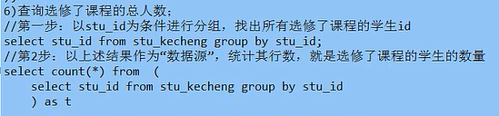

mysql知识点
mysql 基本查询语法
语法形式：select [all | distinct] 字段或表达式列表 [from子句] [where子句] [group by子句] [having子句] [order by子句] [limit子句];
基本语义与解释：select语句表示从某个或默写表中查询（取得）活干条数据。上述语法形式中。所有中括号中的部分都是可以省略的，但是如果出现，则他每年的顺序必须按上面给出的顺序书写。而且，逻辑上，后一个子句都是在前一个子句多获得的结果的基础上再记性其设定的功能操作。
- [all | distinct] 表示是否返回取得的数据中的重复行。all表示会返回重复行，distinct表示不返回重复行，意思是，重复的若干数据就只返回一行，默认就是all，也就是最常用的，因为数据通常都不会有重复行。
-
where子句说明 like说明
-
group by子句说明
分组后，通常只有可用的“组信息”，常用的有“组”的数量，平均值，最大最小值，总和值
select基本查询语法 总结
select基本查询语法 案例
mysql 连接查询语法
mysql 子查询语法
mysql 联合查询语法
select联合查询案例
注释:在mysql中，将连接查询Join翻译成联合查询，而联合查询union，没有明确翻译
注释：子查询和连接查询都能实现，连接查询普遍效率较高
select联合查询 3表查询案例（多表查询）

注释：最后一个案例，分组为了严格，加上name。可以不要